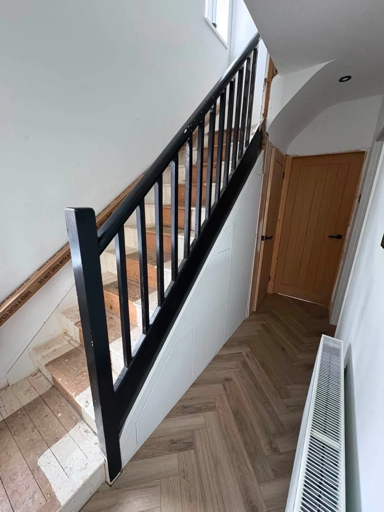
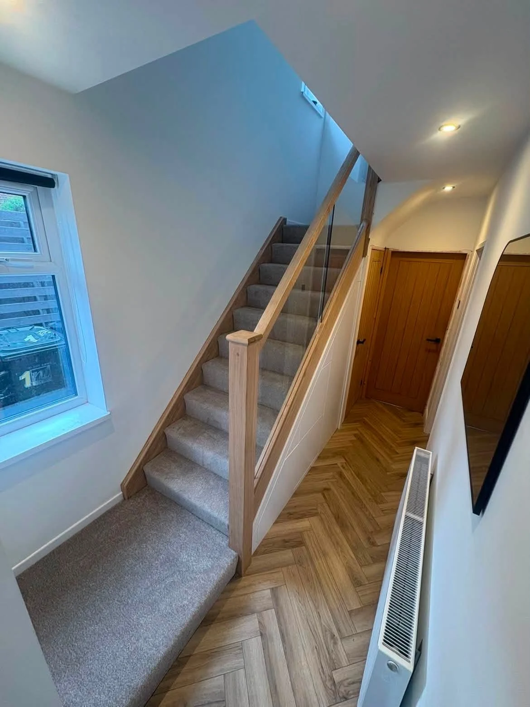
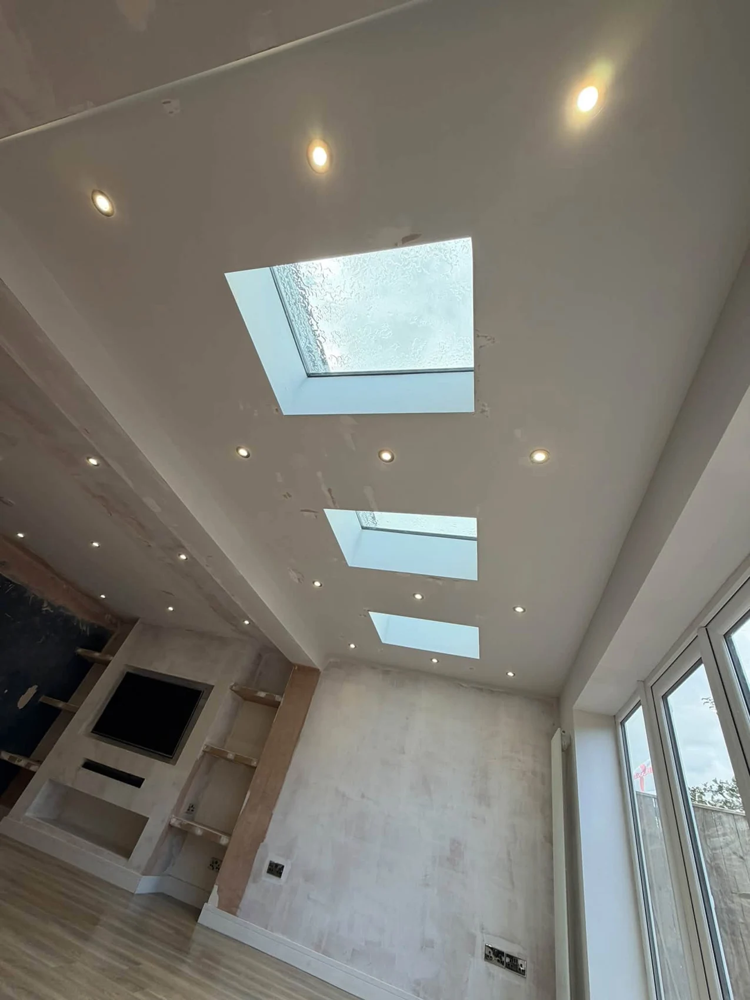

LG JOINERY & CONSTRUCTION LTD · NORTH EAST
See the detail.
Picture the possibilities.
Kitchens, bathrooms, staircases, extensions and bespoke joinery.
BEFORE & AFTER
A new outlook.
From the first step.
The existing dark balustrade and bare staircase, followed by the oak and glass installation. The open glass panels let light move through the hall.


CRAFTED AROUND YOUR HOME
Bringing more
light into the home.
A view of the rooflights and ceiling during the finishing stage of an extension project.
Tell us about your project →
OUR PROJECTS
The project collection.
All supplied projects, including finished spaces and work in progress. Select an image to enlarge.
YOUR NEXT PROJECT
Let’s talk about your home.
Tell us what you have in mind. This form opens a WhatsApp draft with all your details, ready for you to review, add photos and send.